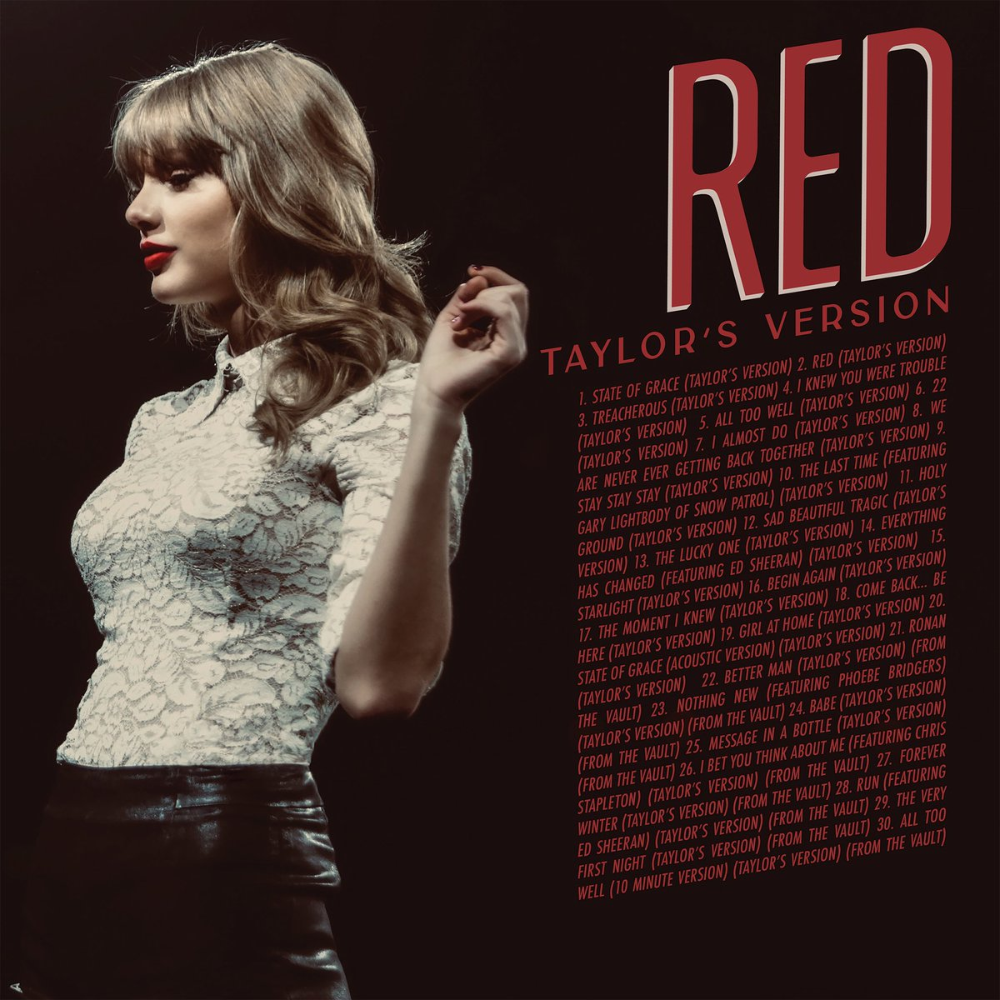

"Musically and lyrically, Red resembled a heartbroken person. It was all over the place, a fractured mosaic of feelings that somehow all fit together in the end. Happy, free, confused, lonely, devastated, euphoric, wild, and tortured by memories past. Like trying on pieces of a new life, I went into the studio and experimented with different sounds and collaborators. And I'm not sure if it was pouring my thoughts into this album, hearing thousands of your voices sing the lyrics back to me in passionate solidarity, or if it was simply time, but something was healed along the way."

The album was initially released on October 22, 2012, by Big Machine Records. It included hit-after-hit songs such as "We Are Never Ever Getting Back Together", "I Knew You Were Trouble", "22", and the duet with fellow succesful musician Ed Sheeran, "Everything Has Changed". Upon its release, Red received much love and peaked at the top of multiple music charts, such as the US Billboard Hot 100. The album explored mainstream pop, a first for Taylor as her previous albums mainly consisted of country-esque elements, alongside a variety of genres. It became one of her most acclaimed albums and collected much critical praise. Rolling Stone placed it at number 99 on its list of the 500 Greatest Albums of All Time; a feat that undoubtedly proved the singer-songwriter's artistry and versatility.
In support of the release of Red in 2012, Taylor went on her third concert tour The Red Tour which started on March 13, 2013. The first concert was conducted in Omaha, Nebraska and the tour ended with a performance in Singapore. The tour's locations spanned from North America, to Oceania, to Europe, and all the way to Asia. The tour ended on June 12, 2014, with a total of 86 shows. Supporting acts on Taylor's concerts includes well-known artists such as Ed Sheeran, Austin Mahone, Neon Trees, The Vamps, NIKI, and many others. The tour was attended by approximately 1.7 million people and grossed over $150 million in revenue. The tour received many positive reviews for its performances and became one of the most successful tours at the time.
As per her contract with Big Machine, Taylor released six studio albums under the label from 2006 to 2017. In late 2018, her contract with said label expired; and she withdrew from Big Machine and signed a new recording deal with Republic Records, a division of Universal Music Group, which secured her the rights to own the masters of the new music she will release. In 2019, American businessman Scooter Braun and his company Ithaca Holdings acquired Big Machine. As part of the acquisition, ownership of the masters to Taylor's first six studio albums, including Red, transferred to him. In August 2019, she announced that she would re-record her first six studio albums, so as to own their masters herself. Thus, Taylor began re-recording the albums in November 2020, starting with her second studio album Fearless.
In her first announcement, Taylor Swift proclaimed that the re-recorded version of Red will be released on 19 November, 2021. It was set to include all 30 tracks that was originally meant to be in the 2012 version. The album is estimated to be around 2 hours and 10 minutes long. However, on September 30, the American singer announced that she would be moving the release date up by one week. Now, the album is being released on the 12th of November, 2021. Among the many songs, Taylor will be producing and directing a short film for the original 10-minute-long version of All Too Well which will star acclaimed actors Sadie Sink and Dylan O'Brien. The short film can be watched down below: